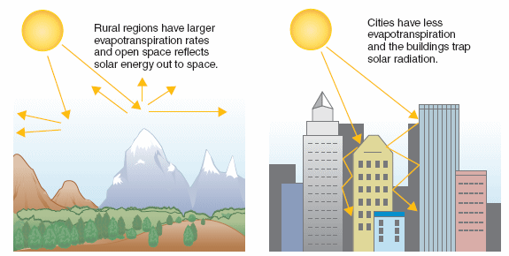
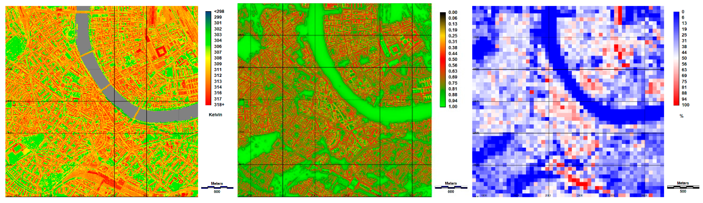

8 Week 8
9 Temperature
9.1 Summary
This week we covered the role that remote sensing can play in helping cities adapt to and mitigate rising temperatures. The Urban Heat Island is a well-documented phenomenon. It refers to the tendency for built-up areas to have higher temperatures than their surrounds. This is a pretty significant problem, given that the majority of the world’s population live in cities.
A key part of the issue is that urban heat islands tend to produce positive feedback loops. This means that they are self-reinforcing, and the effect gets worse over time. Different aspects of the built environment interact with each other and magnify the heating effects of other factors. This image illustrates part of the urban heat island effect: Built-up areas have lower rates of evapotranspiration, and tall buildings trap ambient heat. These two mechanisms combine for a larger heating effect:

From a policy perspective, remote sensing data provides a number of advantages in detecting, understanding, monitoring, and intervening to reduce this effect.
There are a number of satellites that capture temperature data, including Landsat and the Moderate Resolution Imaging Spectroradiometer (MODIS). MODIS has a high temporal resolution, which allows for 1-2 images a day in most parts of the world.
Here I’ve calculated mean temperature for the Western Cape using both Landsat and MODIS:
Landsat:

MODIS:

You can see that MODIS captures a lot more of the variation in temperature than Landsat in this case. Interestingly, the MODIS temperature data picks up changes in elevation pretty well: You can see the Cape Fold mountains very clearly in the image above.
Another interesting dimension, given all of the discussion above about urban heat island effects, is that Cape Town doesn’t really register as having a high temperature in either image. That isn’t all that surprising, however: the bright area in the North is Namaqualand, which is a desert, and the one in the North East is the Karoo, an arid semi-desert region that has been in the grips of a prolonged multi-year drought.
9.2 Applications
In South Africa, the Council for Scientific and Industrial Research (CSIR) have developed a model for understanding temperature in cities. Their model uses temperature projections and spatial information from municipal spatial development frameworks (see week 4) about urban surfaces to understand how rising temperatures might be mitigated in different cities. The CSIR website doesn’t say whether remote sensing data was used in their model, but there is a clear case for integrating it if it doesn’t, and it would be interesting to see how the model outputs might change if its predictions were based on remote sensing inputs rather than global temperature projections.
However, it’s also important to have a full understanding of the phenomenon under study, as Parlow (2021) discusses. In this study, the authors note that many of the current papers simplify the urban heat island effect by failing to account for how the data was collected or what it represents. There are several pitfalls to this approach, one of which is the fact that most remotely sensed data will be reading temperature at the roof level. This image shows this effect:

It’s easy to see how this could lead to inaccurate results, as high temperatures on rooftops don’t necessarily mean that people on the ground are experiencing elevated temperatures! That’s not to say that the urban heat island effect doesn’t exist – this is not what the paper is trying to say – but it is to stress the importance of ground-truthing remotely sensed data, and having a full understanding of how data was collected and what it really shows.
9.3 Reflections
I find this complicated - as with so many urban issues, it’s difficult to drive systemic change when cities are created by so many small decisions. Cities are built one land use decision at a time, and that’s especially the case with something like the urban heat island effect: the cumulative impact of many individual decisions has led to this scenario.
I remember when, a few years ago, the block of flats that I lived in was due to be repainted. The residents wanted to go with a darker colour because it was fashionable. I tried to object on the basis of the heat impact of the darker colour (I also just didn’t think it looked very nice, so my argument was biased), but there was very little interest in that argument from other residents. I think that’s the case with a lot of this: it’s difficult to understand, in the abstract, how a decision like choosing a paint colour for your building will contribute to global warming. However, when many people think that way, and these small decisions reinforce each other, it adds up to a positive feedback loop that is very difficult to arrest.
I think that’s a really big advantage to remote sensing data being applied in this way: It makes it possible to quantify existing trends, and model how different interventions will change things in the future.
As a final fun reflection, here’s a link to a video my classmates and I made to explain the urban heat island effect with interpretive dance!